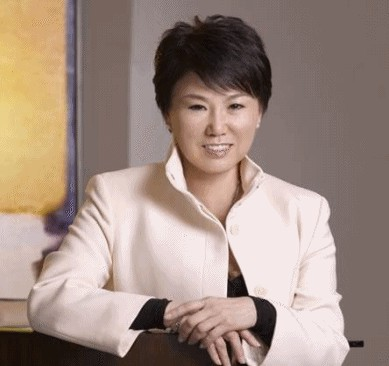
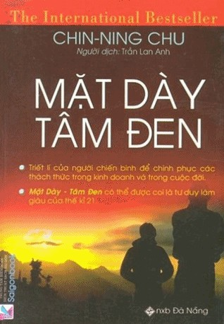

Chin-ning Chu là chủ tịch công ty Tư Vấn Tiếp Thị Á Châu (Asian Marketing Consultants, Inc.) và là một diễn giả quốc tế, một chuyên gia đào tạo, một tư vấn, và cũng là tác giả cuả cuốn “The Chinese Mind Game and The Asian Mind Game” (Trò Đấu Trí Trung Hoa và Đấu Trí Á Châu).
Được coi là chuyên gia hàng đầu trên thế giới về lãnh vực hiểu biết tâm lý kinh doanh ở châu Á, cô cũng là tác giả viết sách kinh doanh bán chạy nhất ở châu Á.
Sinh tại tỉnh Tienjin, Trung Quốc, cô Chu đã cùng gia đình bỏ trốn sang Đài Loan sau khi Trung Hoa Lục Điạ rơi vào tay Cộng Sản.
Ở tuổi 16, cô đã vào một tu viện Công giáo để chuẩn bị trở thành một nữ tu. Nhưng cha cô đã bắt cô ra khỏi tu viện để ép cô dấn thân vào học vấn ở bậc cao học.
Những tác phẩm cuả cô Chu đã được giới truyền thông quốc tế ca ngợi nồng nhiệt, trong đó phải kể đến các Hãng CNN, báo USA Today, báo The London Financial Times, Nhân Dân Nhật Báo Trung Quốc; những ấn bản châu Á cuả các tạp chí People, Bazaar,Vogue, v.v…
Cô đã tiết lộ một số những công ty đa quốc nổi tiếng thế giới đã từng là thân chủ cuả cô, và trong Đại Hội Đảng Dân Chủ Tranh Cử Tổng Thống Mỹ năm 1996, cô đã được tổ chức quốc tế mang tên “Women of the World” (Phụ Nữ cuả Thế Giới) tôn vinh là Phụ Nữ Xuất Sắc Nhất Năm (Woman of the Year) cuả nước Mỹ.
Cô đã trình bày triết lý đấu tranh cuả châu Á, như là kim chỉ nam tiên phong để quán triệt tư duy chiến lược trong thế giới kinh doanh cũng như trong đời sống thường.
Là một con người khao khát suy tư, cô đã kết hợp được khôn ngoan và tâm linh bất diệt cuả nhân loại với những chiến thuật kinh doanh thực dụng để khắc phục những thách thức muôn hình vạn trạng cuả cuộc sống thực tế

Theo tôi nghĩ, trước khi đọc một tác phẩm, thiết tưởng tìm hiểu đôi chút về tác giả của nó, cũng là một sự cần thiết không thể thiếu được để quán triệt nội dung sách.
⚝ ✽ ⚝
1. Điểm cốt yếu:
- Thế nào là mặt dày? tâm đen?
- Các giai đoạn
2. Chuẩn bị: 11 nguyên tác cấu thành
3. Dharma: hành động phù hợp
4. Tiền định, nỗ lực và khát vọng bản thân
5. Sử dụng tính tiêu cực làm bàn đạp thành công
6. Sự chịu đựng: thất bại, nhẫn nại, chịu đựng và thành quả.
Nguy cơ = nguy hiểm + cơ hội
7. Tiền: suy nghĩ, thay đổi, điều chỉnh thái độ đối với tiền
8. Dối trá để đạt mục đích nhưng không lừa lọc. Bon chen để bất chấp đạt mục đích.
9. Lao động: bản thân cần công việc
10. Rèn luyện sự nhạy cảm để biết khi nào đấu tranh và khi nào phải khuất phục. Cần có sức mạnh để chấp nhận sự khuất phục, chịu đựng.
11. Sống giữa xảo trá và tàn nhẫn:
- Biết và bảo vệ giá trị bản thân, nuôi dưỡng tinh thần đằng sau mỗi hành động.
- Khi bắt đầu thực hành thì cần thiết phải gọi lên sự khuất phục
- Không cần phải làm hài lòng tất cả.
12. Bản năng sát thủ: tàn nhẫn vì tử tế. Biết kiềm chế lòng trắc ẩn.
13. Tài lãnh đạo: sách Khổng Minh.
14. Dày từ trong, Đen từ trong: dỡ bỏ những rào cản
- 7 giai đoạn: khao khát; bối rối; chấp nhận "đáng khinh"; hoàn hảo có khuyết điểm; thu hút cái mới; quân bình nội tâm; lạnh lùng và thách thức hạn chế.
- Ba phẩm chất: trì trệ; cái tôi; niềm vui và tri thức.
- Bốn sức mạnh: Nước, Lửa, Gió, Đất.
15. Những con đường: khoảng nội tâm tĩnh lặng
Hiểu biết và trải nghiệm các vấn đề tinh thần kết hợp nhận thức.
16. Phấn đấu từ nạn nhân thành người chiến thắng.
